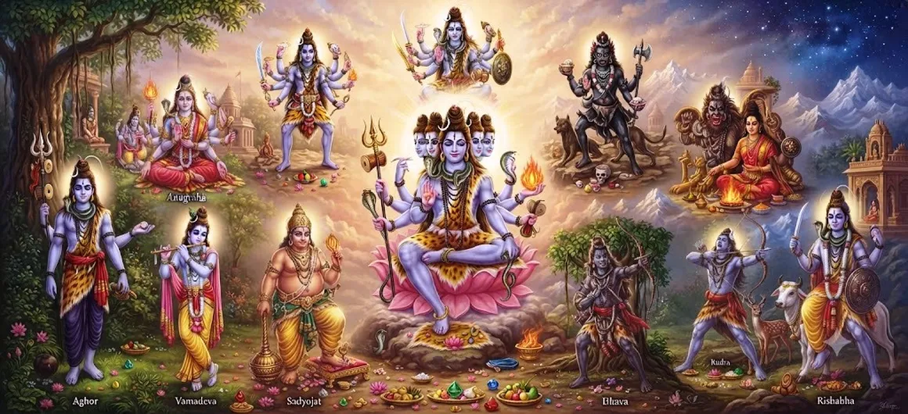

शिव के ग्यारह अवतार
शतरुद्र संहिता का अध्याय 18 भगवान शिव की दिव्य अभिव्यक्तियों की पवित्र खोज जारी रखता है। शिव के दस अवतारों के विवरण के बाद, यह अध्याय शिव के ग्यारह अवतारों की परंपरा की ओर मुड़ता है।
अनेक अवतारों का विचार भक्तों को विभिन्न पवित्र रूप प्रदान करता है जिसके माध्यम से महादेव की महिमा, शक्ति, करुणा, सुरक्षा, परिवर्तन और आध्यात्मिक स्वरूप पर चिंतन किया जा सकता है।
यह अध्याय शिव की अभिव्यक्तियों के व्यापक अनुक्रम में एक और चरण बनाता है और पाठक को दुर्वासा से संबंधित निम्नलिखित कथा के लिए तैयार करता है।
अध्याय 18 की मुख्य बातें
ग्यारह दिव्य अवतार
यह अध्याय शिव के ग्यारह अवतारों की पवित्र परंपरा पर केंद्रित है।
दिव्य अभिव्यक्ति
अवतार महादेव की महिमा पर विचार करने के विभिन्न तरीके प्रदान करते हैं।
शिव तत्व
अभिव्यक्तियाँ शिव की गहरी आध्यात्मिक वास्तविकता पर प्रतिबिंब को प्रोत्साहित करती हैं।
भक्ति
शिव की अभिव्यक्तियों का स्मरण भक्ति और श्रद्धा को गहरा कर सकता है।
आध्यात्मिक चिंतन
अध्याय दिव्य अभिव्यक्ति के अर्थ पर चिंतन को आमंत्रित करता है।
पवित्र कथा को जारी रखना
यह अध्याय दुर्वासा की निम्नलिखित कथा की ओर ले जाता है।
इस अध्याय में मुख्य विषय
शिव के ग्यारह अवतार
अध्याय 18 में शिव के दस अवतारों से लेकर ग्यारह अवतारों तक शिव की पवित्र अभिव्यक्तियों की चर्चा जारी है। यह विषय उन तरीकों का एक और संरचित चिंतन प्रस्तुत करता है जिनसे पवित्र रूपों के माध्यम से सर्वोच्च भगवान तक पहुंचा जा सकता है।
ग्यारह की संख्या अध्याय को इसकी विशिष्ट रूपरेखा देती है, जबकि गहरा उद्देश्य सर्वोच्च दिव्य वास्तविकता के रूप में शिव का चिंतन है।
ईश्वरीय अभिव्यक्ति का उद्देश्य
पवित्र अभिव्यक्तियाँ पहचानने योग्य रूपों और आख्यानों के माध्यम से अथाह दिव्य को चिंतन के लिए सुलभ बनाती हैं। वे भक्तों को भगवान शिव से जुड़ी महिमा, शक्ति, करुणा, सुरक्षा, परिवर्तन और ज्ञान तक पहुंचने के विभिन्न तरीके प्रदान करते हैं।
इसलिए अभिव्यक्तियाँ न केवल पवित्र वर्णन के विषय के रूप में बल्कि आध्यात्मिक चिंतन और भक्ति के अवसर के रूप में भी काम करती हैं।
दिव्य स्वरूप एवं गुण
प्रत्येक पवित्र अभिव्यक्ति को दिव्य वास्तविकता के एक विशेष आयाम को व्यक्त करने के रूप में माना जा सकता है। भक्त शक्ति, करुणा, ज्ञान, सुरक्षा, अनुशासन, अनुग्रह और आध्यात्मिक परिवर्तन जैसे गुणों पर विचार कर सकता है।
इस तरह का प्रतिबिंब शिव की याद को उन गुणों से जुड़ने की अनुमति देता है जिन्हें किसी के अपने जीवन में विकसित किया जा सकता है।
शिव तत्व को समझना
शिव तत्व व्यक्तिगत रूपों से परे भगवान शिव द्वारा प्रस्तुत गहन आध्यात्मिक वास्तविकता की ओर इशारा करता है। कई अभिव्यक्तियाँ चिंतन के लिए अलग-अलग दृष्टिकोण प्रदान करती हैं, जबकि सर्वोच्च वास्तविकता सीमा से परे रहती है।
इसलिए अवतारों का चिंतन भक्त को व्यक्तिगत रूपों के बारे में जागरूकता से उनमें अंतर्निहित महान एकता की पहचान की ओर ले जा सकता है।
भक्ति और स्मरण
भक्ति शिव की पवित्र अभिव्यक्तियों के स्मरण को अर्थ देती है। प्रार्थना, ध्यान, श्रद्धा और स्मरण के माध्यम से भक्त मन को महादेव की ओर निर्देशित कर सकता है।
नियमित स्मरण दैनिक जीवन में विनम्रता, धैर्य, करुणा, अनुशासन, साहस और ईश्वर के प्रति जागरूकता को भी प्रोत्साहित कर सकता है।
आध्यात्मिक चिंतन
ग्यारह अवतार भक्त को दिव्य अभिव्यक्ति की समृद्धि पर विचार करने के लिए आमंत्रित करते हैं। पवित्र रूपों पर व्यक्तिगत रूप से विचार किया जा सकता है, फिर भी वे शिव की महान आध्यात्मिक वास्तविकता से जुड़े रहते हैं।
इस तरह के चिंतन का उद्देश्य केवल पवित्र नामों को याद करना नहीं है बल्कि आध्यात्मिक जागरूकता और भक्ति को गहरा करना है।
घोषणापत्र के पीछे की एकता
पवित्र अभिव्यक्तियों की विविधता का अर्थ सर्वोच्च वास्तविकता में विभाजन नहीं है। बल्कि, विभिन्न रूप अलग-अलग दृष्टिकोण प्रदान करते हैं जिसके माध्यम से भक्त शिव की अथाह प्रकृति तक पहुंच सकते हैं।
इस एकता को पहचानने से भक्त को प्रत्येक व्यक्तिगत अभिव्यक्ति से परे सर्वोच्च वास्तविकता के बारे में जागरूक रहते हुए पवित्र रूपों की विविधता का सम्मान करने की अनुमति मिलती है।
भक्तों के लिए मार्गदर्शन
भक्त शिव के साथ अपने रिश्ते को मजबूत करने के साधन के रूप में ग्यारह अवतारों से संपर्क कर सकते हैं। पवित्र अभिव्यक्तियों का स्मरण प्रार्थना, ध्यान, आत्म-अनुशासन, करुणा और सेवा के साथ किया जा सकता है।
स्मरण का गहरा मूल्य भक्ति को चरित्र और आचरण को प्रभावित करने की अनुमति देने में निहित है, ताकि आध्यात्मिक चिंतन रोजमर्रा की जिंदगी का हिस्सा बन जाए।
दुर्वासा की कथा की ओर
शिव के ग्यारह अवतारों की चर्चा पवित्र वृत्तांत के इस चरण को उसके अगले आख्यान की ओर ले आती है। अगला अध्याय दुर्वासा की कथा की ओर मुड़ता है।
दैवीय अभिव्यक्तियों की चर्चा से एक पवित्र व्यक्तित्व पर केंद्रित कथा में परिवर्तन शिव की उपस्थिति, शक्ति और आध्यात्मिक प्रभाव की व्यापक खोज को जारी रखता है।
अध्याय का आध्यात्मिक संदेश
इस अध्याय का केंद्रीय प्रतिबिंब यह है कि ईश्वर का चिंतन कई पवित्र अभिव्यक्तियों के माध्यम से किया जा सकता है, जबकि अंतर्निहित सर्वोच्च वास्तविकता एक ही रहती है। शिव के अवतार भक्तों को आध्यात्मिक चिंतन और भक्ति के विभिन्न बिंदु प्रदान करते हैं।
भक्त को पवित्र अभिव्यक्तियों को श्रद्धा और चिंतन के साथ देखने के लिए प्रोत्साहित किया जाता है, जिससे महादेव की याद से आंतरिक जागरूकता और आध्यात्मिक अनुशासन को गहरा किया जा सके।
अध्याय 18 की मुख्य शिक्षाएँ
दिव्य अभिव्यक्ति
शिव की अभिव्यक्तियाँ ईश्वर तक पहुँचने के पवित्र तरीके प्रदान करती हैं।
आध्यात्मिक एकता
अनेक पवित्र रूप एक ही सर्वोच्च वास्तविकता से जुड़े रहते हैं।
भक्ति
स्मरण और श्रद्धा भक्त का शिव के साथ रिश्ता मजबूत करती है।
चिंतन
पवित्र अभिव्यक्तियाँ गहन आध्यात्मिक चिंतन के अवसर बन जाती हैं।
दिव्य गुण
चिंतन करुणा, साहस, विनम्रता और ज्ञान जैसे गुणों को प्रेरित कर सकता है।
पवित्र निरंतरता
यह अध्याय पाठक को दुर्वासा की निम्नलिखित कथा के लिए तैयार करता है।
आध्यात्मिक चिंतन
शिव के ग्यारह अवतारों को उन कई तरीकों पर ध्यान के रूप में देखा जा सकता है जिनसे भक्त के लिए दिव्यता सुलभ हो जाती है। सर्वोच्च वास्तविकता सीमा से परे है, फिर भी पवित्र परंपराएँ ऐसे रूप प्रदान करती हैं जिनके माध्यम से मानव मन और हृदय श्रद्धा और प्रेम के साथ ईश्वर तक पहुँच सकते हैं। विभिन्न अभिव्यक्तियों का चिंतन साधक के भीतर विभिन्न आध्यात्मिक गुणों को जागृत कर सकता है। शक्ति साहस को प्रेरित कर सकती है, करुणा सेवा को प्रेरित कर सकती है, ज्ञान विवेक को प्रेरित कर सकता है, और दैवीय कृपा विनम्रता और समर्पण को प्रेरित कर सकती है। महत्वपूर्ण बिंदु केवल पवित्र नाम या विवरण एकत्र करना नहीं है, बल्कि किसी के आंतरिक जीवन को बदलने के लिए शिव के स्मरण की अनुमति देना है। दैवीय अभिव्यक्तियों की विविधता भी एक गहरी एकता की ओर इशारा करती है। यद्यपि पवित्र रूप अलग-अलग दिखाई दे सकते हैं, आध्यात्मिक वास्तविकता जिसकी ओर वे भक्त को निर्देशित करते हैं वह सर्वोच्च शिव से जुड़ी रहती है। इस प्रकार, ग्यारह अवतारों का चिंतन भक्ति का कार्य और आध्यात्मिक चिंतन का साधन दोनों बन सकता है।
अध्याय 18 का संदेश जीना
शिव के ग्यारह अवतारों की शिक्षा को सचेत स्मरण और अभ्यास के माध्यम से दैनिक जीवन में लाया जा सकता है। एक भक्त कठिनाइयों के दौरान साहस, अनिश्चितता के दौरान धैर्य, दूसरों के प्रति करुणा, सफलता के बाद विनम्रता और महत्वपूर्ण विकल्प चुनते समय ज्ञान विकसित कर सकता है।
इस प्रकार शिव का स्मरण एक धार्मिक विचार से भी बढ़कर हो जाता है। यह एक व्यावहारिक आध्यात्मिक अनुशासन बन जाता है जो चरित्र, आचरण, रिश्तों और ईश्वर के प्रति जागरूकता को प्रभावित करता है।
प्रमुख आध्यात्मिक अवधारणाएँ
अध्याय 18 का पवित्र विषय भगवान शिव से जुड़ी ग्यारह दिव्य अभिव्यक्तियों से संबंधित है।
गहरा आध्यात्मिक सिद्धांत और सर्वोच्च वास्तविकता जिसका प्रतिनिधित्व भगवान शिव करते हैं।
एक पवित्र अभिव्यक्ति जिसके माध्यम से भक्त शिव की महिमा और गुणों पर विचार करते हैं।
भगवान शिव के प्रति प्रेमपूर्ण भक्ति, स्मरण, श्रद्धा और समर्पण।
पवित्र अभिव्यक्तियों और उनसे प्रेरित गुणों पर गहन चिंतन।
पवित्र अभिव्यक्तियों की विविधता में अंतर्निहित गहरी एकता की पहचान।
अध्याय सारांश
शतरुद्र संहिता अध्याय 18 शिव के ग्यारह अवतारों का पवित्र विषय प्रस्तुत करता है। अध्याय 17 और उसमें शिव के दस अवतारों की चर्चा के बाद, यह अध्याय महादेव से जुड़ी दिव्य अभिव्यक्तियों की खोज जारी रखता है। ग्यारह गुना ढांचा सभी व्यक्तिगत अभिव्यक्तियों से परे सर्वोच्च वास्तविकता के बारे में जागरूकता बनाए रखते हुए पवित्र रूपों के माध्यम से शिव पर विचार करने का एक और तरीका प्रदान करता है। अध्याय को भक्ति, स्मरण, ध्यान, श्रद्धा और दैवीय गुणों पर चिंतन के माध्यम से पूरा किया जा सकता है। इसका गहरा आध्यात्मिक मूल्य शिव के स्मरण को साधक के आंतरिक जीवन और दैनिक आचरण को प्रभावित करने की अनुमति देने में निहित है। फिर चर्चा पाठक को अगले अध्याय, दुर्वासा की कथा, शतरुद्र संहिता के पवित्र क्रम को जारी रखने के लिए तैयार करती है।
अक्सर पूछे जाने वाले प्रश्न
①शतरुद्र संहिता अध्याय 18 का विषय क्या है?
अध्याय 18 शिव के ग्यारह अवतारों से संबंधित है और शिव की दिव्य अभिव्यक्तियों की पवित्र चर्चा जारी रखता है।
② शिव के ग्यारह अवतारों का क्या महत्व है?
ग्यारह अवतार एक पवित्र रूपरेखा प्रदान करते हैं जिसके माध्यम से भक्त शिव की दिव्य प्रकृति की विभिन्न अभिव्यक्तियों पर विचार कर सकते हैं।
③ भक्त शिव के अवतारों का चिंतन कैसे कर सकते हैं?
भक्त प्रार्थना, स्मरण, ध्यान, श्रद्धा और शिव से जुड़े आध्यात्मिक गुणों पर चिंतन के माध्यम से उन तक पहुंच सकते हैं।
④ शिव की अभिव्यक्तियों का गहरा संदेश क्या है?
अभिव्यक्तियाँ सर्वोच्च वास्तविकता की गहरी एकता की ओर इशारा करते हुए ईश्वर के प्रति विभिन्न पवित्र दृष्टिकोण प्रदान करती हैं।
⑤ शिव के ग्यारह अवतारों से पहले कौन सा अध्याय आता है?
पिछला अध्याय शिव के दस अवतार है।
⑥ शिव के ग्यारह अवतारों के बाद कौन सा अध्याय आता है?
अगला अध्याय दुर्वासा की कथा है।
"कई पवित्र अभिव्यक्तियों के माध्यम से, भक्त अपने हृदय को एक सर्वोच्च शिव की ओर मोड़ता है।"
शतरुद्र संहिता के माध्यम से जारी रखें
शिव के दस अवतारों से लेकर शिव के ग्यारह अवतारों के पवित्र वृत्तांत तक आगे बढ़ें, और फिर दुर्वासा की कथा की ओर बढ़ें।